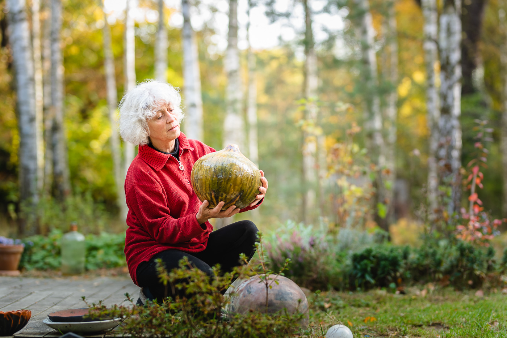

O ceramice



Od 25 lat tworzę ceramikę użytkową i artystyczną. Korzystam z pieca elektrycznego, neolitycznego lub pieca na drewno. Szczególnie inspirująca jest dla mnie technika wypału raku.

Od 25 lat tworzę ceramikę użytkową i artystyczną. Korzystam z pieca elektrycznego, neolitycznego lub pieca na drewno. Szczególnie inspirująca jest dla mnie technika wypału raku.